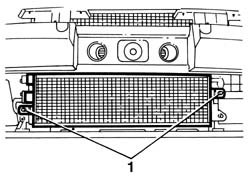
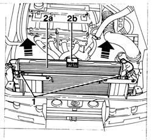

1088A24 engine cooling radiator - r r for air conditioned versions
- Path
- Procedures > 10 ENGINE > 1088 ENGINE COOLING > 1088B ENGINE COOLING RADIATOR > 1088A24 engine cooling radiator - r r for air conditioned versions
- Kind
- repair procedure (removal / refitting; the operation number is the code)
- Applies to
- engines: 1.6 TS , 1.8 TS; all production periods
- Interactive page
- https://sloeber94.github.io/elrnDB-a156/en/#/3237709
Applies to: engines: 1.6 TS , 1.8 TS; all production periods
 Removing
Removing
 Refitting
RefittingPlace the car on a lift.
Disconnect the battery negative terminal.
 | Name | Connector |
|---|---|---|
- | Battery |
7055B54 under-engine guard - r r
1088D10 lower sleeve for coolant outlet from radiator - r + r
1088D14 upper sleeve for coolant inlet to radiator - r + r
- 5505C10 front beam wiring - r r
- 7090G06 HEADLAMP HOUSING CONNECTING CROSSMEMBER - Replace.
1088E10 radiator cooling fan - r + r
1. Undo the two lower fixing bolts joining the engine cooling radiator to the air conditioning system condenser.

Applies to: engines: 1.6 TS , 1.8 TS; all production periods
1. Undo the upper two fixing bolts joining the engine cooling radiator to the air conditioning system condenser.
2. Remove the engine cooling radiator (2a) lifting it carefully and keeping the upper flexible element (2b).

Applies to: engines: 1.6 TS , 1.8 TS; all production periods
Refitting
RemovingPosition the cooing radiator inside the engine compartment resting it on the lower crossmember.
Check that the pins at the base of the radiator are correctly fitted in the flexible fixing elements on the lower crossmember.
Join the condenser and the radiator tightening the four fixing bolts.
1088E10 radiator cooling fan - r + r
- 7090G06 HEADLAMP HOUSING CONNECTING CROSSMEMBER - Replace.
- 5505C10 front beam wiring - r r
1088D14 upper sleeve for coolant inlet to radiator - r + r
1088D10 lower sleeve for coolant outlet from radiator - r + r
Refill the engine cooling system with coolant.
 | Type | Component | Name | Qty. |
|---|---|---|---|---|
- | Fluid | ENGINE COOLING CIRCUIT | Mixture 50% Paraflu11 for Alfa Romeo/distilled water | 6.9 |
Connect the battery negative terminal.